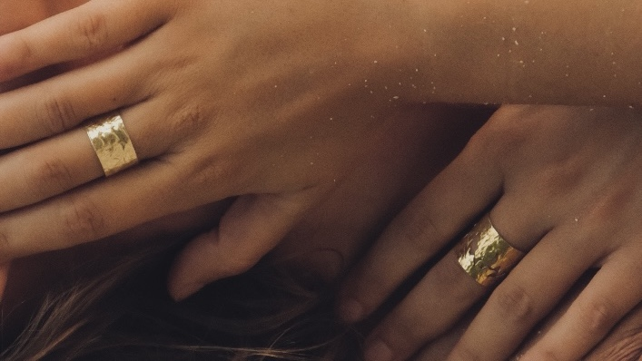
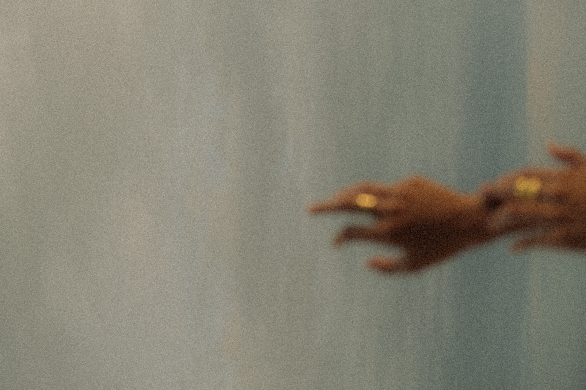

SUSTAINABILITY
Wearing and feeling good in our jewelery it is just as important to us
that you feel good about where it all comes from. Our whole production
ecosystem—from sourcing, manufacturing, to branding—aims to mitigate
our impact particularly on the environment, but also support and
empower our partners, and give back to the communities. We know how
our materials are processed and sourced as well as the working
conditions that they were made in.

KEEP IN TOUCH
We are not only looking forward to keeping our customers pleased but
also anyone who’s engaged in the process. We are also in touch with
the craftsmen and make sure that they are satisfied with their salary
and motivated to be continued with their passion. We ensure that
throughout the process our work is being made in an ethical and
respectful way.

OUR MISSION
Our mission is to stay true to customers in what we do, considering
sustainability, materials used and supporting charities.